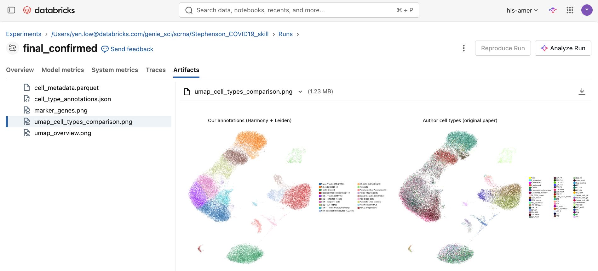

Overview
About Vital Skills¶
Vital Skills is a collection of agent skills for Health & Life Sciences (HLS) workflows on Databricks. Built by HLS experts for HLS tasks, Vital Skills help you get the most out of Databricks using AI assistants.
Each skill is a folder with a SKILL.md file that follows the Agent Skills standard compatible with most coding agents. It guides AI how to run a domain workflow with the right libraries, tools, and MCP servers.
Why use Vital Skills¶
Perform HLS tasks faster and more reliably using AI coached by Vital Skills. Vital Skills prompts AI to recognize key decision checkpoints for clarification, use industry-standard methods and generate expected charts and artifacts. Our evaluations against Bioomni benchmarks show that Genie Code with skills approach the capabilities of a scientist with a few years of experience.
More than a sandbox, move your work into production leveraging the full-featured Databricks Data & AI platform. Perform exploratory analysis in Notebooks, log your experiments to MLflow, save and govern your data and models. Serve models via REST API. Schedule jobs. Monitor with dashboards.
What can I do with Vital Skills¶
See available skills here.
For example, you can build patient cohorts with plain English descriptions like "patients with type 2 diabetes and uncontrolled blood sugar". AI will load the cohort-builder skill, look into the data available (structured and/or unstructured) and present several options defining "uncontrolled blood sugar" so you can specify your cohort with great precision.
Another example is downloading and serving biological foundation models like scGPT on Databricks using the open-weight-models skill.
You can also perform RNA sequencing analysis using the single-cell or bulk analysis skill and log the results to MLflow Experiments.

Use Vital Skills with any AI agent¶
Use with any AI agent (Genie Code, Genie One, Omnigent, Claude Code, Codex) that support standard agent skills.
Genie Code is available within the Databricks workspace and also as CLI.
Genie One is Databricks universal chat AI. It can also load skills and generate code. Genie One is to Genie Code like Claude Desktop is to Claude Code.
Often, both are powered by similar LLMs but Genie Code is optimized for coding while Genie One is optimized for chatting.
Freely available¶
Get Vital Skills from Github. Don't have Databricks? Check out Databricks Free Edition!